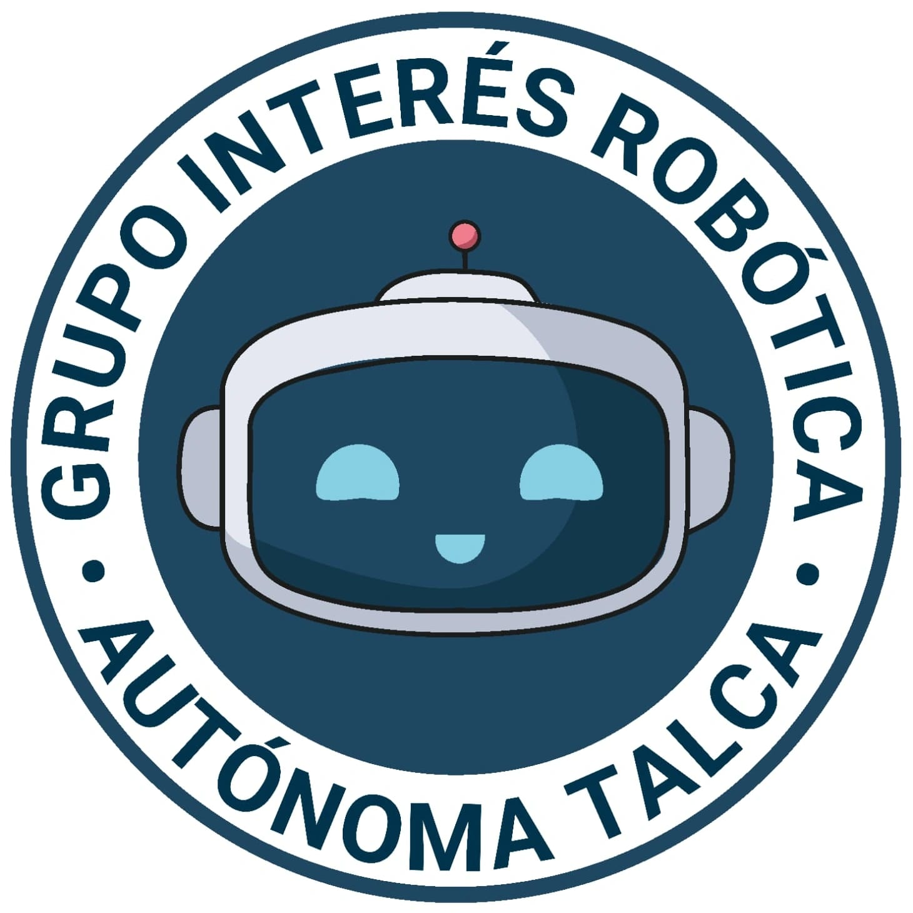
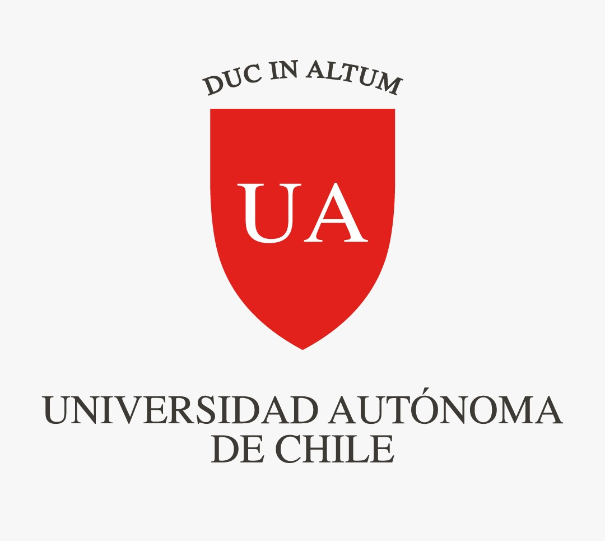
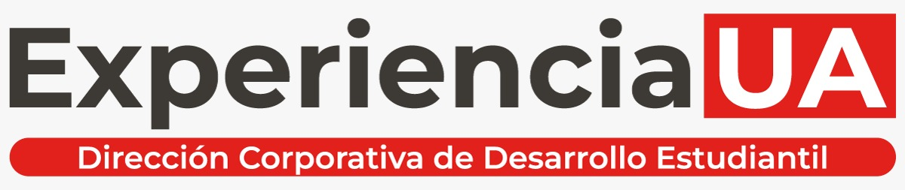

Talleres practicos
Construccion, programacion y experimentacion con soluciones roboticas aplicadas a la educacion.

Robotica Educativa Grupo de Interes · Experiencia UAUniversidad Autonoma de Chile · Talca
Un espacio de aprendizaje colaborativo para explorar, disenar y aplicar la robotica como herramienta pedagogica, creativa y de innovacion educativa.


Proposito
El grupo promueve actividades teorico-practicas que integran la robotica al ambito educativo mediante talleres, charlas y proyectos aplicados en escuelas y liceos.
Su trabajo busca fortalecer competencias cientifico-tecnologicas, pensamiento logico, creatividad e innovacion, vinculando el conocimiento universitario con el entorno social.
Que hacemos
Construccion, programacion y experimentacion con soluciones roboticas aplicadas a la educacion.
Instancias de aprendizaje entre estudiantes, docentes y comunidades escolares interesadas.
Vinculacion con ninas, ninos y jovenes para acercar la tecnologia a procesos activos e inclusivos.
Participacion en eventos donde el estudiantado exhibe creaciones y comparte experiencias.
Participantes
Esta dirigido principalmente a estudiantes universitarios interesados en educacion, tecnologia e innovacion, y a la comunidad escolar de la region: docentes, ninas, ninos y jovenes que participan en actividades de vinculacion con el medio.
Habilidades
El objetivo es potenciar la apropiacion critica y responsable de la tecnologia como medio para mejorar los procesos de ensenanza-aprendizaje.
Marco institucional
Los grupos de interes son asociaciones voluntarias de estudiantes regulares que, motivados por un objetivo comun, promueven actividades enmarcadas en la mision, vision, propositos y principios institucionales.
Su funcion es promover actividades de interes comun en un ambiente de respeto mutuo, representar intereses estudiantiles y orientar sus acciones hacia los principios de la Universidad Autonoma de Chile.
Galeria
Una muestra reciente de talleres, encuentros y experiencias del grupo.
Cargando imagenes...
Contacto
Conoce novedades, convocatorias y registros de actividades en Instagram.